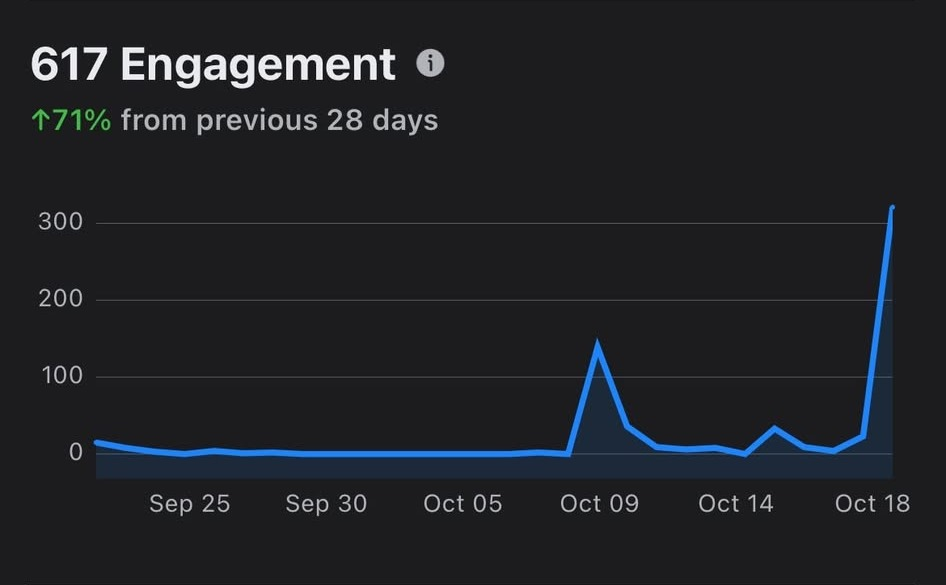

Welcome
to

Where Literacy Meets Security
Website by Miguel Paolo D. Unico
from 11-Leeuwenhoek (STEM)
ABOUT PRIVORA
A student-based advocacy aiming to enlighten the minds of the Filipino youth on data privacy driven problems through literate initiatives.
Privora is initiated by STEM students from 11-Leeuwenhoek of the Manila Science High School.
pri · vo · ra
noun
an advocacy project title that originated from the terms “privacy” and the informational website “quora”
About Our Audience
Our advocacy primarily targets social media users, most especially the youth (15-21 years old. Our content is aligned with what our audience loves seeing, short-form content that is easy to digest while having some humor.
INTERESTED?
Help us out by answering our Audience Profiling Survey here!
Answer Now!
This survey is protected by the Data Privacy Act of 2012. We will ensure the protection of your information and will only use it for the reasons provided in the survey.
Check out our content!
(Click on the buttons to switch slides.)
Mission
Our mission is to be the catalyst for truth who will cultivate the minds of the youth on the problems concerning the cyber world through reforms and knowledgeable content to eradicate data privacy breaches.
Vision
We envision a world wherein young people all over the Philippines are aware and have expertise on the proper handling of their personal data online. Through this, we aim to enhance proper online safery and lessen the fatalities caused by misuse of the internet.
PRIVORA'S SMART GOALS
Specific
Privora has one specific goal in mind—to protect your personal information.
Measurable
We aim to reach 10,000 or more people to spread awareness about data privacy.
Achievable
Spread awareness using digital tools like social media.
Relevant
Data Privacy is an important issue to tackle as millions of people continue to use the internet.
Time-Bound
Privora aims to reach its goals before the end of 2025.
Privora's Analytics

Privora's Engagement Analytics (data from October 18, 2025).
Privora is an up-and-coming advocacy program made by the youth, for the youth. Our engagements are currently down. Any help for the growth of our page is greatly appreciated. If you wish to support us and our advocacy, follow us on our Official Facebook Page!
Follow Us Here!
Privora's Video Content
Check out our PrivaTalks Series on Facebook!
Episode 1 - Who We Are - Introducing our new series, PrivaTalks, where we tackle several prevalent issues users may experience within the cyber world. Watch our FIRST episode to know more about who we are and what we do!
Episode 2 - Stay Aware - Take a glimpse of another episode of PRIVATALKS featuring how it feels to fall deep but hold onto the safety net of information.
Episode 3 - Act Now - Though not everyone takes accountability, we should always be responsible in knowing the facts and acting upon learning from our mistakes to stand tall and be present in an online world where information is our strongest tool.
Episode 4 - Data Privacy Act - Byn is on the hunt for interested individuals to learn about data privacy. Will you take on this opportunity?
Author's Thoughts
Privora started out as a project as a requirement for Empowerment Technologies. It allowed us to have a platform about something we truly cared about. It was a great project, especially to intelligent students who have an interest in technology. It fostered teamwork and collaboration, everyone had to contribute for the good of the advocacy, and it strengthened our skills in copywriting, designing, web development, and video editing. It allowed students to contribute and make an impact towards society, despite having little power to do so.
At first, I believed that creating an advocacy was an easy task. We were already so used to designing, researching, and editing our projects from prior years. However, it slowly proved me wrong. An advocacy page does not end as soon as you click “Upload”, it is more than that. You need to watch analytics, to see what’s doing well and what isn’t, to see what your audience wants from likes, comments, and shares, to adapt your content to what’s popular, and all that while maintaining your time for other subjects and personal life. It can be quite draining, especially in the first few weeks where we aimed to grow quick. It was difficult, we were not getting the likes and follows that we expected. We had to mass share our page, and yet that was nearly not enough. But when our numbers slowly started increasing, it felt great. Finally, our hard work was paying off. It felt great seeing something that you’re very passionate about spread to hundreds, even thousands of people.
The advocacy journey certainly isn’t easy, but I’d say it is fulfilling to bring positive change towards society. My message to those who wish to start an advocacy is to start now. The sooner your advocacy gets to the public, the better! With just some computers and a couple great minds, you can give birth to something that will change lives.